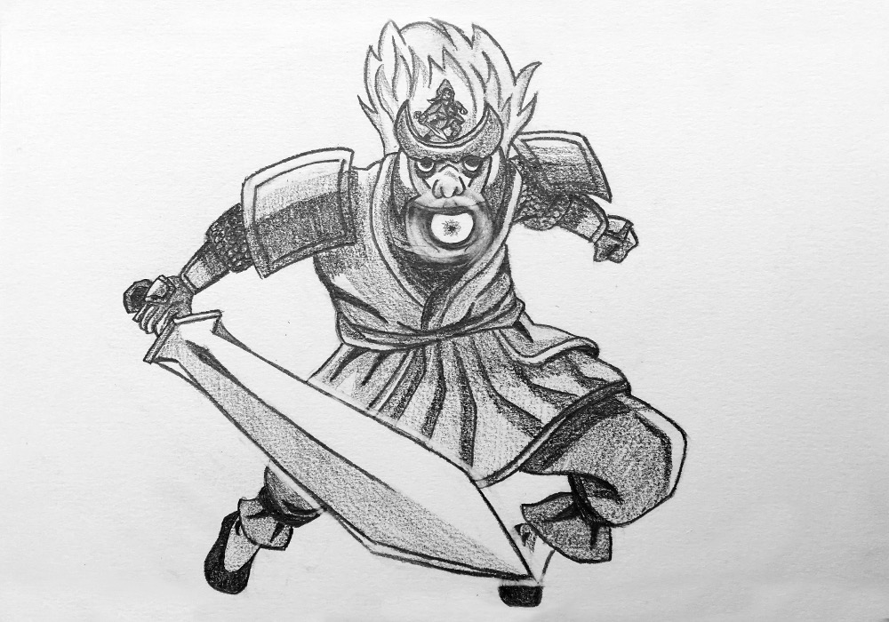

Défi 12 personnages de fantasy : Andokai
Andokai est une humaine mage de la série Les nains.
Elle est la seule mage du royaume encore vivante, excepté celui qui a trahi tous les siens. Elle devient l’alliée de Tungdil et, en plus de maîtriser la magie, se bat au corps à corps à l’épée avec l’aide de son garde du corps, Djerun.
Ce Djerun m’a tellement «inspirée» que j’ai occulté toutes les autres caractéristiques d’Andokai. Je ne l’ai pas représentée pour elle-même, mais pour ce géant en armure. J’aurais peut-être dû mettre l’accent sur sa capacité à maîtriser les éléments grâce à son affinité avec le Dieu Samusin.
En tous cas, l’évocation de Djerun m’a fait immédiatement penser au Susanoo comme présenté dans l’univers de Naruto – ce qui m’a aussi fait oublier ses caractéristiques propres comme le haume. Et vu que c’est l’avant-dernier dessin de ce défi et que je ne parviens toujours pas à représenter sur le papier ce que je vois dans ma tête, j’ai triché en regardant des images des Susanoo de Sasuke, Itachi, et tous les membres du clan Uchiha. J’ai juste changé un peu sa trombine, enlevé les ailes, arrangé son armure et ajouté la lumière dans sa bouche. Andokai se tient debout sur sa tête, effectuant les mouvements de combat pour qu’il les reproduise contre les ennemis. Voilà voilà…
